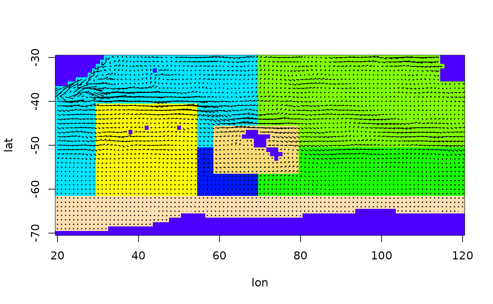

quiver.RdThis function plots a flow field given as west-east and south-north velocity values at regularly spaced grid points.
The west-east velocities as a matrix.
The south-north velocities as a matrix.
Positions of the arrowbases in x-direction.
Positions of the arrowbases in y-direction.
If TRUE, the flow field is added to the current plot.
The length of the longest arrow is 'scale' * 'distance between grid points'.
data(Udata,Vdata,Sdata)
arena = prepare.arena(Udata,Vdata,Sdata)
# First use quiver only
quiver(arena$U,arena$V)
#> Warning: default 'pch' is smaller than number of columns and hence recycled
# Now use larger arrows, looks better in this case
quiver(arena$U,arena$V,scale=5)
#> Warning: default 'pch' is smaller than number of columns and hence recycled
# Together with the polygon structure
plot(arena,arrow_scale=5)
